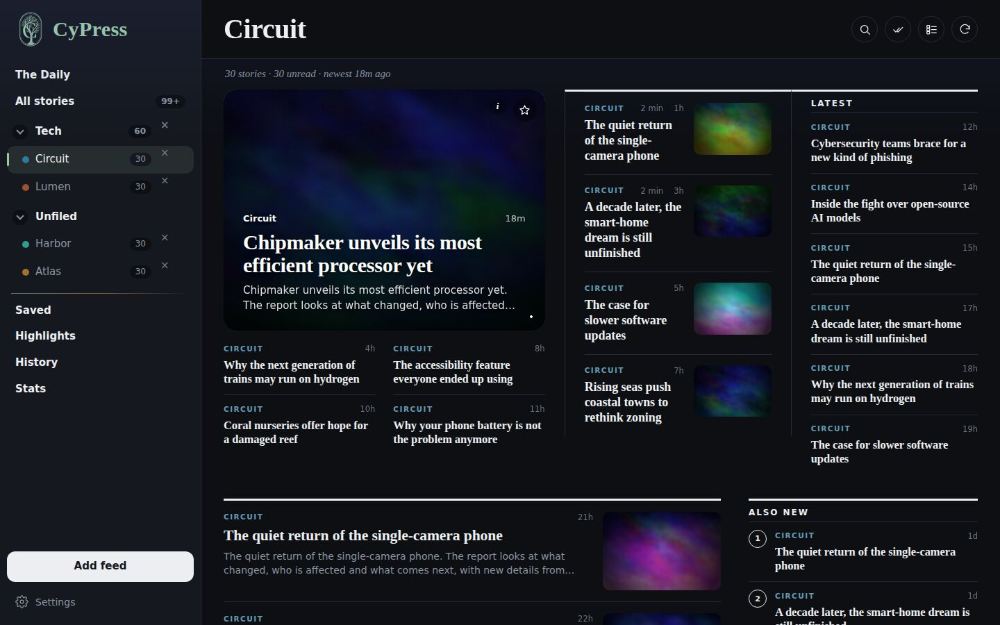
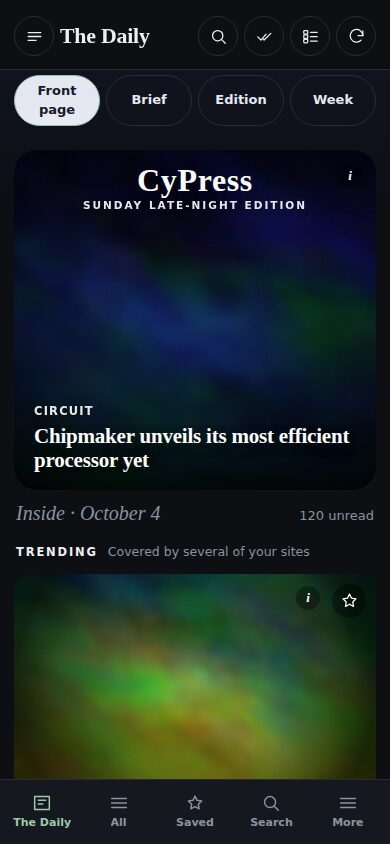
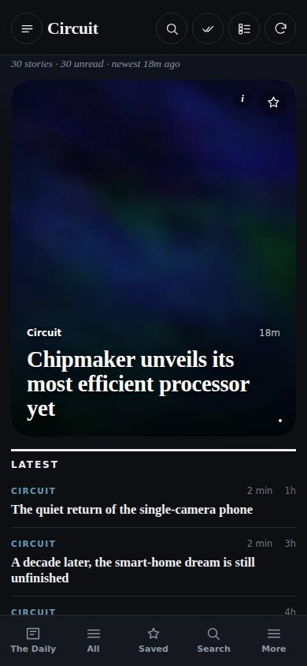

The news you follow, laid out like a magazine.
New to this? Scroll down a little: the 3 steps to put CyPress on your Home Screen are right below.
There is no App Store download. CyPress is a web app: you add it to your Home Screen once and it opens full-screen like any other app. It takes about 20 seconds.
Done. Open CyPress from the new icon on your Home Screen. Your feeds and settings stay on your phone, and it works without an account.
Good to know: on iPhone, CyPress opens in its own window and remembers your feeds. Read-aloud may pause when you lock the screen, because iOS limits web apps; the Android app does not have that limit. If you clear Safari’s website data, CyPress will start fresh.
Big photos, real headlines and a layout that changes with the news. Shown here with sample stories.



Yes. There are no ads and no account.
Your feeds, settings and saved stories stay on your own device. CyPress has no server that stores them.
On iPhone it is a web app, so you add it from Safari instead (steps above). On Android you install the app file directly.
Stories you have already loaded can be read again without a connection. New stories need internet.
Make sure you are in Safari itself, not an app’s built-in browser. Tap Share, scroll to the bottom of the sheet and tap “View More” or “Edit Actions” if the row is hidden.
Any site with a news feed (RSS). Search by name or paste the address, and CyPress finds the feed.